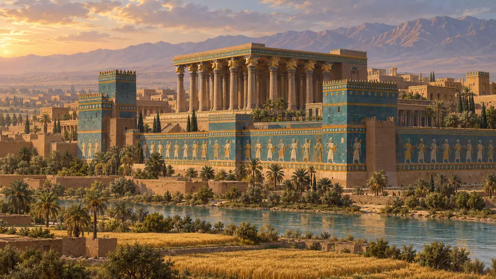
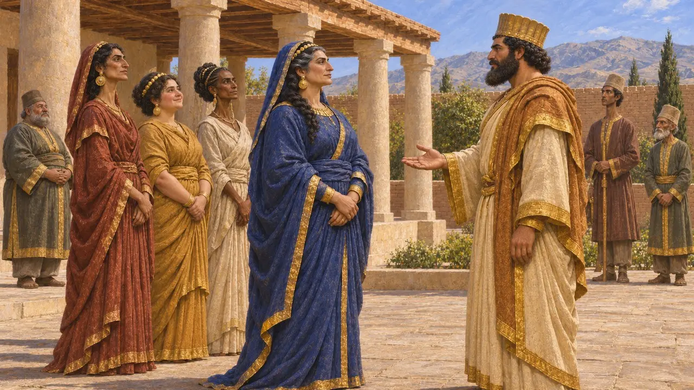
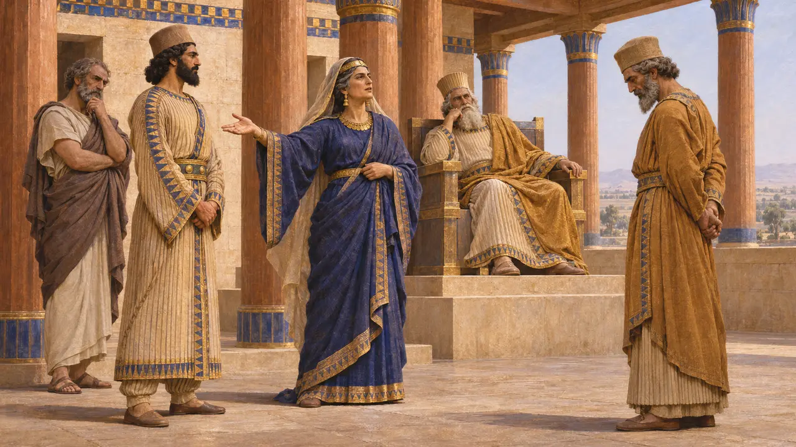
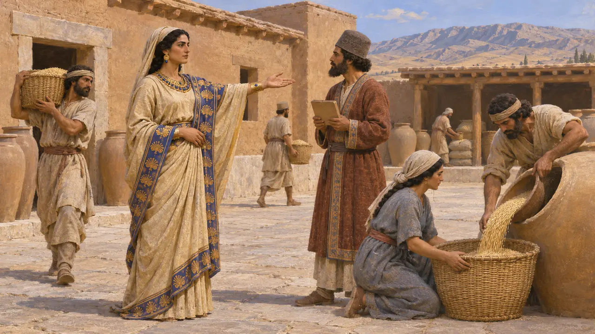
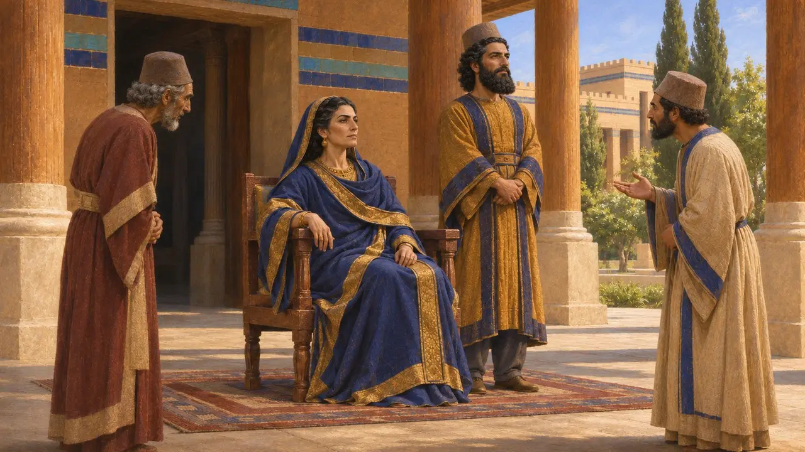
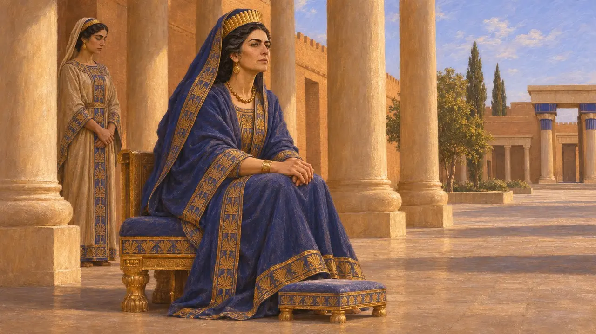

Atossa
Rainha persa, filha de Ciro e mãe de Xerxes, fim do século VI-início do século V AEC
Atossa era filha de Ciro, o Grande, e, segundo o relato de Heródoto, foi casada sucessivamente com Cambises, com o Mago que usurpou o trono e com Dario. Seu filho com Dario foi Xerxes. Os escritores gregos fizeram dela a mulher mais poderosa da corte persa, mas os registros persas mal a mencionam, se é que a mencionam, de modo que sua influência real é difícil de avaliar.
No jogo: A nota da crônica do jogo segue Heródoto, mas a chama de esposa de Bardiya, enquanto Heródoto diz que era esposa do Mago; a verdadeira identidade desse governante é controversa. Nenhum texto persa lhe atribui a sucessão de Xerxes.

Filha de Ciro e esposa de reis
Relato antigoHeródoto conta que Atossa era filha de Ciro, casada primeiro com o irmão Cambises e depois com o Mago que reinou após ele. Ao tomar o trono, Dario casou-se com ela, com sua irmã Artistone, com Pármis, neta de Ciro, e com Fedima, filha de Otanes. Os historiadores modernos interpretam esses casamentos como a maneira de Dario ligar sua nova linhagem à casa de Ciro.
Herodotus 3.68, 3.88

Heródoto sobre a sucessão de Xerxes
Relato antigoHeródoto relata uma disputa entre Artobazanes, o filho mais velho de Dario com uma esposa anterior, e Xerxes, o filho mais velho nascido depois que Dario se tornou rei. Ele diz que Demarato de Esparta aconselhou Xerxes sobre sua pretensão, mas acrescenta que Xerxes teria vencido de qualquer forma, porque Atossa detinha todo o poder. Trata-se de um juízo dele, não de um relato persa.
Herodotus 7.2-3

O que mostram os registros persas
Nos registrosAs inscrições de Dario não nomeiam Atossa. Xerxes, num texto de Persépolis, diz que Dario tinha outros filhos, mas fez dele o maior depois de si mesmo, e não menciona sua mãe. As tabuinhas da Fortificação mostram mulheres da realeza, como Irtashduna (a Artistone de Heródoto) e Irdabama, administrando propriedades e equipes de trabalhadores; portanto, as rainhas podiam deter verdadeiro poder econômico.
XPf; R. T. Hallock, Persepolis Fortification Tablets, 1969

Quão poderosa ela era
DisputadoOs historiadores divergem sobre o quanto confiar na imagem grega de Atossa como a rainha que governava o palácio. Alguns aceitam que sua descendência de Ciro deu a Xerxes uma forte reivindicação. Outros observam que os escritores gregos gostavam de mostrar cortes persas dominadas por mulheres intrigantes, e que as tabuinhas documentam muito melhor outras esposas de Dario. Uma mulher chamada Udusana numa tabuinha da Fortificação pode ser Atossa, mas a identificação é incerta.
M. Brosius, Women in Ancient Persia, 559-331 BC, 1996; P. Briant, From Cyrus to Alexander, 2002

A rainha nas histórias gregas
Lenda posteriorHeródoto conta como o médico grego Democedes curou um tumor em seu seio e, em troca, fez com que ela instigasse Dario a atacar a Grécia, um relato moldado para explicar uma guerra por intrigas de alcova. A peça Os Persas, de Ésquilo, encenada em Atenas em 472 AEC, mostra a mãe de Xerxes aguardando em Susa notícias de Salamina, embora nunca a nomeie. O escritor grego Helânico, citado pelo autor cristão Taciano, fez dela a primeira pessoa a compor cartas.
Herodotus 3.133-134; Aeschylus, Persians; Tatian, Oration to the Greeks
Fontes
- Herodotus 3.88, 3.133-134, 7.2-3
- Aeschylus, Persians
- XPf
- M. Brosius, Women in Ancient Persia, 559-331 BC, 1996
- P. Briant, From Cyrus to Alexander, 2002
- R. T. Hallock, Persepolis Fortification Tablets, 1969